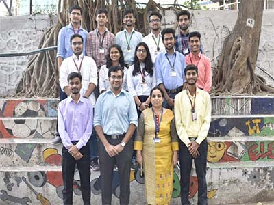
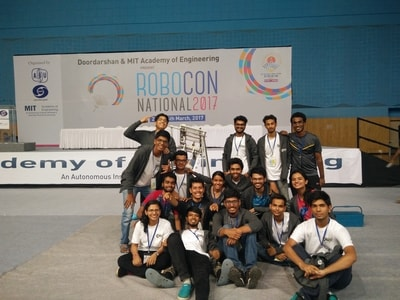

HOME PAGE SKILLS ACHIEVEMENTS CONTACT US
ABOUT
Team Robocon CRCE is a robotics team from Fr. Conceicao Rodrigues College of Engineering, Bandra (W). We're a group of budding undergrad engineers who make robots to participate in Robocon India.
Robocon (short for Robotic Contest) is organised by Asia-Pacific Broadcasting Union (ABU), a collection of over 20 countries of Asia Pacific Region. NHK, Japan had already been organising such contests at national level and also became the host of the first ABU Robocon in 2002. Since then, every year one of the member broadcasters hosts this international event. Robocon India 2009 View of Arena
The broadcasters of each participant country are responsible for conduct of their national contests to select the team which will represent their country in the International Contest. Teams from Engineering and Technological colleges are eligible for participation. Participating Teams are expected to design and fabricate their own robots and organize their teams including an Instructor, Team Leader, Manual Robot Operator and an Automatic Robot Operator.
PROJECTS
ABU ROBOCON 2020 FIJI
Contest Theme “ROBO RUGBY 7s”
The ABU Robocon 2020 Suva contest is to play rugby 7’s game using two robots and five obstacles as five defending players. The highlight of this game is how the two robots collaborate to score Try and the Goal Kick. The main and unique challenge of this game will be Goal Kick, kicking the Kick Ball over the cross bar of the conversion post because of the unique shape of the rugby ball. The audience will be fascinated if the robot made all the Goals successfully.
Mongolia - Robocon 2019
The task is based on the traditional Mangolian message communication system. The team must compete to deliver the message quickly on their four legged Automatic robots following the given rules. The team who first reaches the Uukhai Zone is the Winner !!

The Landing Disc - Robocon 2017
The rules provided take inspiration from Japan’s traditional game Tosenkyo. Two teams must compete to stack flying discs on top of 7 podiums of varied height. During the match the team can knock down the opponents stack of discs. The team with the most number of discs at the end of the match is the winner.
Chai-Yo! : Clean Energy Recharging the World - Robocon 2016
The game of ABU Robocon 2016 is designed in order to create the awareness of efficient energy consumption and clean and renewable energy utilization. Each team has to build two robots; Eco Robot and Hybrid Robot. Eco Robot doesn’t have an actuator to drive. It receives the driving energy from Hybrid Robot. Eco Robot has to use only one steering actuator to control its direction, to track the path containing Slopes and Hills, River, and Down Hill. Besides providing driving energy to Eco Robot, Hybrid Robot has to take Wind Turbine Propeller from Eco Robot and climb up Wind Turbine Pole in order to assemble Wind Turbine. .